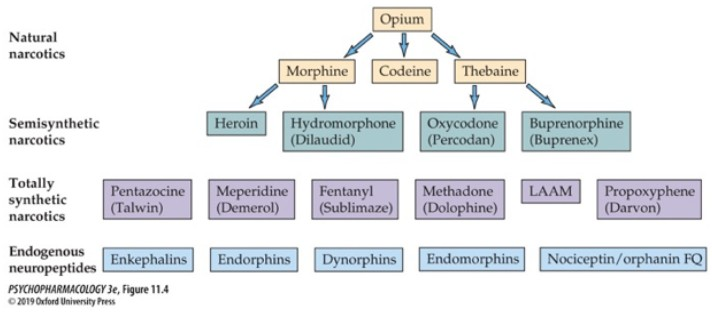

01 · Orientation
6.1 Overview
Neuropharmacology examines how drugs alter nervous-system function through receptors, transporters, ion channels, enzymes, and other molecular targets. A drug's molecular action can lead to broader physiological and psychological effects that vary with dose, route of administration, metabolism, and individual biology.
Drugs may be administered orally, by inhalation, intramuscularly, intravenously, subcutaneously, or through specialized neuraxial routes such as epidural or intrathecal delivery. Intraperitoneal administration is also common in laboratory research. Route affects how quickly a drug reaches circulation and the brain, how much is available to tissues, and how long its effects last.
Metabolism chemically alters drugs, often reducing activity and making compounds easier to eliminate. Many transformations occur through enzymes in the liver, although the gastrointestinal tract, kidneys, blood, and other tissues can also contribute.
This page is an educational overview of mechanisms and should not be used as guidance for taking, combining, or stopping any substance or medication.
02 · Reference
6.2 Neuropharmacology Glossary
Foundational language for describing drug targets, responses, potency, and safety.
- Drug action
- The molecular change produced when a drug interacts with a target such as a receptor, transporter, ion channel, or enzyme.
- Drug effect
- The broader physiological or psychological response that follows a drug's molecular actions.
- Ligand
- A molecule that binds to a receptor or another biological target with some degree of selectivity.
- Agonist
- A ligand that activates a receptor and produces a biological response.
- Antagonist
- A ligand that occupies a receptor while blocking or reducing activation by other ligands.
- Inverse agonist
- A ligand that reduces a receptor's baseline activity and produces an effect opposite to that of an agonist.
- Affinity
- The strength of attraction between a ligand and its binding site.
- ED50
- The dose that produces a defined therapeutic effect in 50% of a studied population.
- TD50
- The dose that produces a defined toxic effect in 50% of a studied population.
- Therapeutic index
- A comparison between toxic and effective doses that provides one estimate of a drug's margin of safety.
- Drug metabolism
- Enzymatic modification of a drug, often making it less active or easier for the body to eliminate.
- Prodrug
- A compound administered in an inactive or less active form that is converted within the body into an active drug.
- Pharmacokinetics
- What the body does to a drug through absorption, distribution, metabolism, and excretion, shaping how quickly it reaches its target and how long it remains active.
- Pharmacodynamics
- What a drug does to the body through its interactions with molecular targets and the resulting changes in cells, neural circuits, physiology, and behaviour.
6.3 Psychostimulants
Psychostimulants are a broad category of drugs that increase activity within the central nervous system, particularly in neural systems involved in alertness, attention, arousal, motivation, and reward. They include natural and synthetic substances used in medical and non-medical contexts.
These compounds are often described as sympathomimetics because they activate the sympathetic nervous system and mimic aspects of sympathetic arousal. Stimulants were used during the Second World War to reduce fatigue and sustain wakefulness and performance.
6.4

Drugs that act primarily on opioid receptors throughout the nervous system and body, particularly in circuits involved in pain, reward, and emotional processing. Opioids typically work by inhibiting the inhibition of VTA dopamine neurons (double negative!), which leads to euphoria
There are currently four opioid receptors that we know of; each one has a unique distribution throughout the CNS, suggesting they modulate specific physiological effects:
- m-opioid receptor (MOR): Highest affinity for morphine and opioids of misuse. The distribution of m-opioid receptors suggests it plays a role in analgesia, feeding, reward & positive reinforcement, respiration, nausea and vomiting.
- d-opioid receptor (DOR): The d-opioid receptor has a similar distribution to m-receptors, however not as prevalent. Involved in modulating olfaction, motor integration, reinforcement and cognitive functions.
- k-opioid receptor (KOR): known for producing effects that are quite different from those of other opioid receptors. It is thought these receptors regulate pain perception, gut motility, dysphoria and neuroendocrine function.
- Nociceptin/orphanin FQ receptor (NOP-R): Widely distributed throughout the CNS and PNS. The distribution of NOP-R suggests a role in analgesia, feeding, learning, and neuroendocrine regulation. Has been shown to reduce pain threshold, in contrast to opioids. Endogenous opioids do not bind NOP-R
6.5 Cannabis
Cannabis-derived compounds interact with the endocannabinoid system, which helps regulate neurotransmitter release across many neural circuits. Individual cannabinoids differ in their targets, psychoactive effects, and therapeutic applications.
6.6 Psychedelics
Psychedelics are psychoactive substances that produce profound changes in perception, cognition, mood, and consciousness, often without producing toxic delirium. Their mechanisms, potency, duration, and physiological and psychological effects vary depending on their chemical structures, although many classic psychedelics produce their effects primarily through serotonin 5-HT2A receptors.
LSD, psilocybin, DMT, 5-MeO-DMT, and 2C-B are serotonergic psychedelics with distinct receptor profiles. Salvinorin A, the active compound in Salvia divinorum, is an important exception because it acts through kappa-opioid receptors rather than 5-HT2A receptors.
6.7 Depressants & Anxiolytics
Depressants are substances that reduce activity within the central nervous system, often producing relaxation, sedation, reduced anxiety, and impaired coordination. Anxiolytics are drugs specifically used to reduce anxiety, although many also produce sedative effects. They include substances with diverse mechanisms, such as alcohol, benzodiazepines, barbiturates, GHB, Z-drugs, and pregabalin.
6.8 Antidepressants
Antidepressants are medications primarily used to treat depression and other mood disorders, and are also used for conditions such as anxiety disorders, obsessive-compulsive disorder, and certain forms of chronic pain. They act on neurotransmitter systems involved in mood, emotion, cognition, and stress, with different classes targeting serotonin, norepinephrine, dopamine, or combinations of these systems.
Their transporters, enzymes, and receptors are affected soon after administration, but clinical improvement usually depends on slower adaptations in autoreceptor feedback, neuronal firing, gene expression, synaptic plasticity, and the activity of prefrontal, limbic, and stress-regulation circuits.